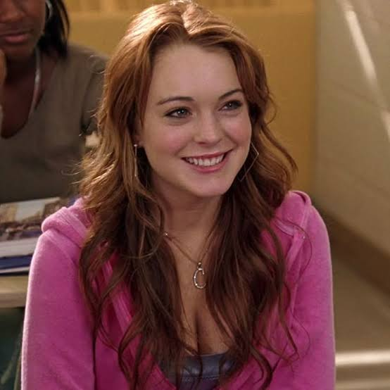
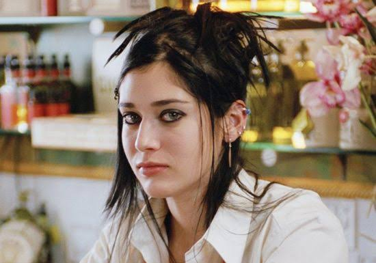
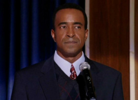

Sobre o filme
Meninas Malvadas conta a história de Cady Heron, uma adolescente que começa a estudar em uma nova escola.
A história mostra amizade, popularidade, conflitos e as consequências de tentar agradar todo mundo.
APRENDA CRIANDO
Às quartas-feiras usamos rosa!
Meninas Malvadas conta a história de Cady Heron, uma adolescente que começa a estudar em uma nova escola.
A história mostra amizade, popularidade, conflitos e as consequências de tentar agradar todo mundo.


Uma estudante nova na escola.
A líder das Poderosas.
A garota mais avoada e engraçada do trio principal.
A leal e fofoqueira integrante do grupinho de Regina.

A colega "esquisita" que arquiteta o plano contra Regina.
O melhor amigo super sarcástico de Janis.
O garoto popular por quem Cady se apaixona.
A professora de matemática sensata e querida.

O diretor da escola.

A mãe descolada e permissiva de Regina.

O jogador de futebol americano e namorado secreto de Regina.
O líder do grupinho de matemática (Mathletes) e rapper autoproclamado.